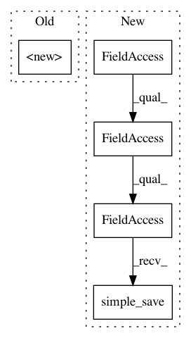

5b6b901c80e87770dc836f0e64e6eeb3c073efef,census/keras/trainer/model.py,,to_savedmodel,#Any#Any#,85
Before Change
sess=sess,
tags=[tag_constants.SERVING],
signature_def_map={
signature_constants.DEFAULT_SERVING_SIGNATURE_DEF_KEY: signature}
)
builder.save()
After Change
def to_savedmodel(model, export_path):
Convert the Keras HDF5 model into TensorFlow SavedModel.
with K.get_session() as sess:
saved_model_util.simple_save(
sess,
export_path,
inputs={"input": model.inputs[0]},
outputs={"income": model.outputs[0]})
def to_numeric_features(features):
Convert the pandas input features to numeric values.
In pattern: SUPERPATTERN
Frequency: 3
Non-data size: 5
Instances
Project Name: GoogleCloudPlatform/cloudml-samples
Commit Name: 5b6b901c80e87770dc836f0e64e6eeb3c073efef
Time: 2017-12-07
Author: robbie.haertel@gmail.com
File Name: census/keras/trainer/model.py
Class Name:
Method Name: to_savedmodel
Project Name: GoogleCloudPlatform/cloudml-samples
Commit Name: 5b6b901c80e87770dc836f0e64e6eeb3c073efef
Time: 2017-12-07
Author: robbie.haertel@gmail.com
File Name: flowers/trainer/model.py
Class Name: Model
Method Name: export
Project Name: GoogleCloudPlatform/cloudml-samples
Commit Name: 5b6b901c80e87770dc836f0e64e6eeb3c073efef
Time: 2017-12-07
Author: robbie.haertel@gmail.com
File Name: mnist/distributed/trainer/model.py
Class Name: Model
Method Name: export